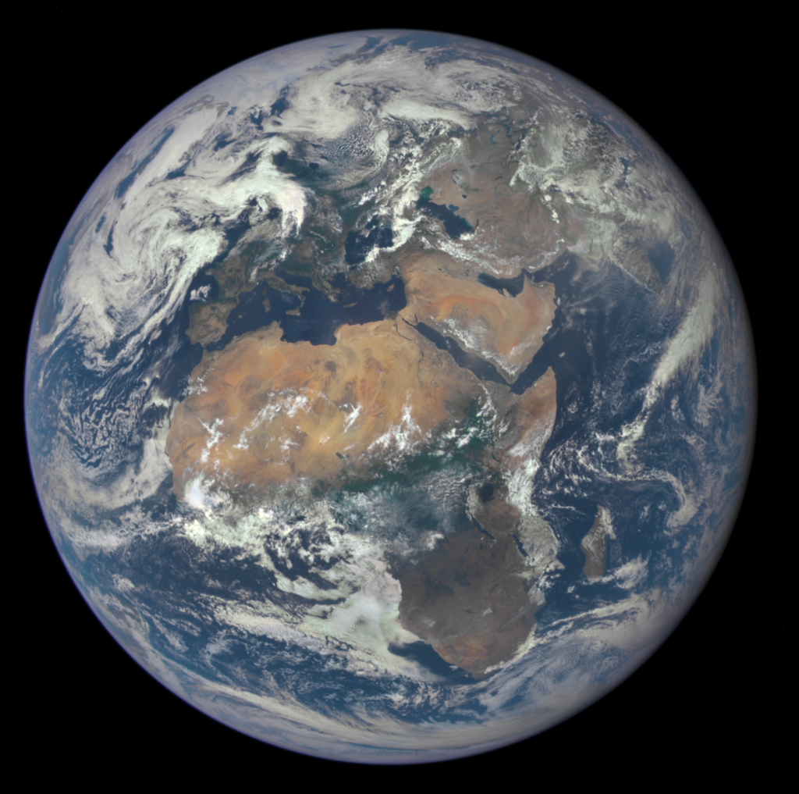
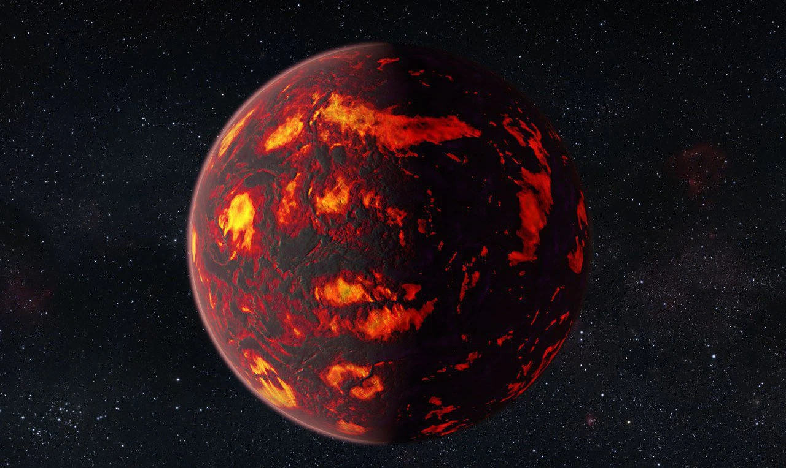
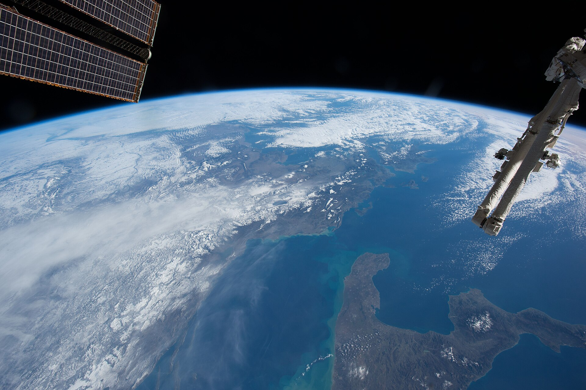

Earth
Earth is the third planet from the Sun in the Solar System. It is the densest, fifth largest in diameter, and the most massive among all the planets in the Solar System, as well as the largest among the terrestrial planets group, which also includes Mercury, Venus, and Mars. It is the only known body in the Universe inhabited by living organisms.
Scientific data indicate that Earth formed from the solar nebula approximately 4.54 billion years ago and shortly after that acquired its only natural satellite — the Moon. Life likely appeared on Earth around 4.25 billion years ago, shortly after its formation. Since then, Earth's biosphere has significantly altered the atmosphere and other abiotic factors, resulting in the quantitative increase of aerobic organisms and the formation of the ozone layer, which, together with Earth's magnetic field, attenuates harmful solar radiation, thereby preserving the conditions for life on Earth. Radiation from the Earth's crust has significantly decreased since its formation due to the gradual decay of radionuclides within it. Earth's crust is divided into several segments, or tectonic plates, which move on its surface at rates of around a few centimeters per year.
Earth interacts (is gravitationally attracted) with other objects in space, including the Sun and the Moon. Earth revolves around the Sun and completes one full orbit around it in approximately 365.26 solar days - a sidereal year. Earth's rotational axis is inclined at 23.44° to the perpendicular to its orbital plane, causing seasonal changes on the planet's surface with a period of one tropical year - 365.24 solar days. A day currently lasts approximately 24 hours. The Moon began its orbit around Earth approximately 4.53 billion years ago. The gravitational influence of the Moon on Earth is responsible for the occurrence of ocean tides. Additionally, the Moon stabilizes Earth's axial tilt and gradually slows down Earth's rotation. According to some theories, asteroid impacts have led to significant changes in the Earth's environment and surface, causing, among other things, mass extinctions of various species.

Origin Theory
Scientists believe that approximately 4.5 billion years ago, a cloud began to compress, likely due to the impact of a shock wave from a supernova that occurred at a distance of several light-years. As the cloud began to shrink, its angular momentum, gravity, and inertia flattened it into a protoplanetary disk perpendicular to its axis of rotation. Subsequently, fragments in the protoplanetary disk began to collide under the force of gravity, and, merging, formed the first planetesimals. In the process of accretion, planetesimals, dust, gas, and remnants left over from the formation of the Solar System began to merge into ever larger objects, forming planets. The approximate date of Earth's formation is 4540.04 billion years ago. The entire process of planet formation took about 10-20 million years.
Observation from Space
Earth was first photographed from space in 1959 by the Explorer-6 spacecraft. The first person to see Earth from space was Yuri Gagarin in 1961. The crew of Apollo 8 in 1968 was the first to observe the Earthrise from lunar orbit. In 1972, the crew of Apollo 17 took the famous picture of Earth - The Blue Marble.
From open space and from "outer" planets (located beyond Earth's orbit), one can observe Earth's passage through phases similar to lunar ones, just as an earthly observer can see the phases of Venus (discovered by Galileo Galilei).